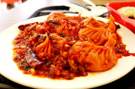
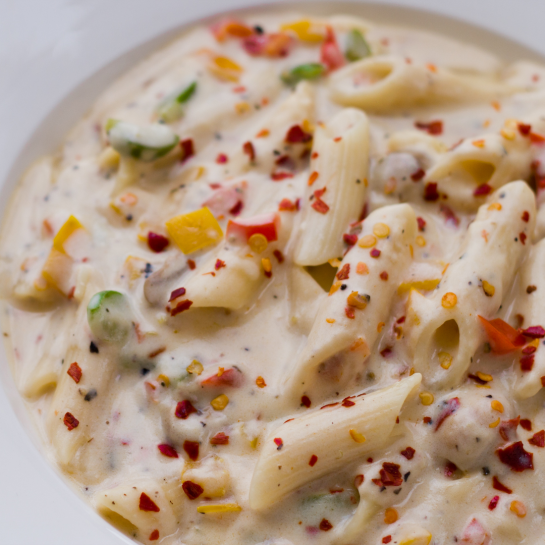
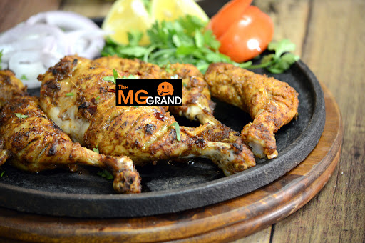
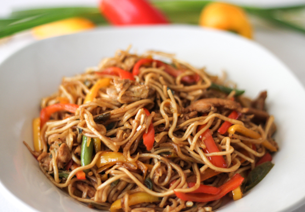
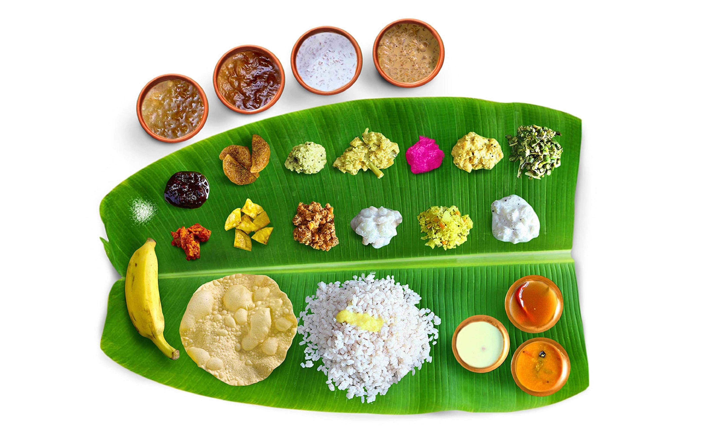

Thalasseri Dum Bhiriyani
Thalassery is famous for the celebrated Malabar cuisine. Their world famous Thalassery biriyani is a
culinary treat. Fragrant meat in a soulful gravy, and rice cooked with spices are married together by
slow cooking again in layers, all absorbing each other’s flavours. Topped up with fried onions, sultana
raisins and cashew nuts, a true Thalassery biriyani is the thing to live for!
Read More

Chicken Fried Momos
Craving for a plateful of hot and crispy hot momos? Then here's a perfect treat for your taste buds.
There's nothing better than indulging in a delicious platter of momos served with spicy chutney. The
love for momos is never-ending for all the right reasons. This famous street food has paved its way to
our hearts with its amazing taste and texture.
Read More

White Sauce Pasta
White Sauce Pasta! With its silky smooth and aromatic sauce made from butter, milk and all purpose flour
(maida), it’s a guaranteed way to delight your taste buds.Make this creamy white sauce pasta or bechamel
sauce pasta from scratch in just 30 minutes. It makes for a perfect lazy dinner and is really popular
among kids.
Read More

Appam with Stew
Appam with stew, one of the traditional Kerala dishes is flavoursome and yummy. A famous food of Kerala,
made from fermented rice flour, coconut milk, coconut water, and a teensy bit of sugar, Appam is
essentially a thin pancake with crispy edges.
Read More

Al-faham
This Arabic dish is made using aromatic spices that uplift the flavour of chicken, and the charcoal-grill
process further adds a smoky flavour.his chicken recipe is very popular in the middle east country.
Read More

Chicken lollipop
Chicken lollipop is an hors d'oeuvre popular in Indo-Chinese cuisine. Chicken lollipop is, essentially a
frenched chicken winglet, wherein the meat is cut loose from the bone end and pushed down creating a
lollipop appearance. It is usually served hot with Szechuan sauce
Read More

Pizza
Pizza is a dish of Italian origin consisting of a usually round, flat base of leavened wheat-based dough
topped with tomatoes, cheese, and often various other ingredients, which is then baked at a high
temperature, traditionally in a wood-fired oven.
Read More

Chcicken Schezwan Noodles
Chcicken schezwan noodles can be made within minutes once you have the schezwan sauce and noodles. It has
bold flavours, particularly the pungency and spiciness resulting from liberal use of garlic and chili
peppers, as well as the unique flavour of Sichuan pepper.
Read More

Sadya
Sadya is a feast of Kerala origin and of importance to all Malayalis, consisting of a variety of
traditional vegetarian dishes usually served on a banana leaf in Kerala as lunch.[1] Sadya means banquet
in Malayalam. Sadya is typically served as a traditional dish for Onam, the state festival of Kerala,
Vishu
Read More